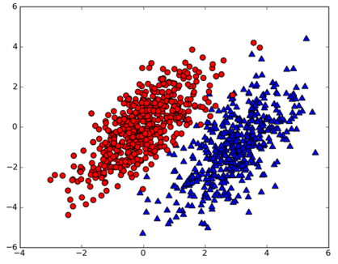
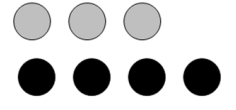
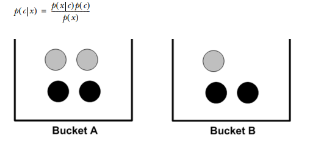

<!DOCTYPE html>
<html>
<head>
	<title>Classifying
        with probability
        naïve Bayes
       </title>
	<link rel="stylesheet" href="https://cdn.jsdelivr.net/npm/bootstrap@4.0.0/dist/css/bootstrap.min.css" integrity="sha384-Gn5384xqQ1aoWXA+058RXPxPg6fy4IWvTNh0E263XmFcJlSAwiGgFAW/dAiS6JXm" crossorigin="anonymous">
    <script src="https://cdnjs.cloudflare.com/ajax/libs/prism/9000.0.1/prism.min.js" integrity="sha512-UOoJElONeUNzQbbKQbjldDf9MwOHqxNz49NNJJ1d90yp+X9edsHyJoAs6O4K19CZGaIdjI5ohK+O2y5lBTW6uQ==" crossorigin="anonymous" referrerpolicy="no-referrer"></script>
	<script src="https://cdnjs.cloudflare.com/ajax/libs/prism/9000.0.1/components/prism-actionscript.min.js" integrity="sha512-YSZLJbdXeh9n0X0aJAuJUk8ArMBEu1F0LQPeiydyVXUMlJ2QZPAFzp/84lkxk9M0NpTJ5aSEUTlbsC4UoUpwYw==" crossorigin="anonymous" referrerpolicy="no-referrer"></script>
    <link rel="stylesheet" href="https://cdnjs.cloudflare.com/ajax/libs/prism-themes/1.9.0/prism-a11y-dark.min.css" integrity="sha512-bd1K4DEquIavX49RSZHIE0Ye6RFOVlGLhtGow9KDbLYqOd/ufhshkP0GoJoVR1jqj7FmOffvVIKuq1tcXlN9ZA==" crossorigin="anonymous" referrerpolicy="no-referrer" />
    <link rel="stylesheet" href="style.css">
	<style>
		body {
			font-family: Arial, sans-serif;
			padding: 20px;
			max-width: 800px;
			margin: 0 auto;
		}
		h1 {
			font-size: 36px;
			margin-bottom: 20px;
		}
        .note {
            background-color: #fff;
            padding: 20px;
            border-radius: 8px;
            box-shadow: 0 2px 4px rgba(0, 0, 0, 0.1);
            text-align: center;
        }
		h2 {
			font-size: 28px;
			margin-top: 40px;
			margin-bottom: 10px;
		}
		p {
			font-size: 16px;
			line-height: 1.5;
			margin-bottom: 20px;
		}
		img {
			max-width: 100%;
			margin-bottom: 20px;
		}
	</style>
</head>
<body>
	<header>
		
		<h1> Classifying
            with probability
            theory: naïve Bayes
           </h1>
		<p>Posted on JUNE 15, 2022 by Zulqarnain</p>
	</header>
	
	<main>
		<section>
			<h2>Introduction</h2>
            Naïve Bayes <br>
            <strong>Pros</strong>: Works with a small amount of data, handles multiple classes <br>
            <strong>Cons</strong>: Sensitive to how the input data is prepared <br>
            Works with: Nominal values

    </section>
		
<section>
    <p>
        Naïve Bayes is a subset of Bayesian decision theory, so we need to talk about Bayesian
decision theory quickly before we get to naïve Bayes.
    </p>
    
</section>
    <section>
        <p>
            We have the data shown in figure and we have a friend who read this book; she found
the statistical parameters of the two classes of data. We have
an equation for the probability of a piece of data belonging to Class 1 (the circles): p1(x,
y), and we have an equation for the class belonging to Class 2 (the triangles): p2(x, y).
To classify a new measurement with features (x, y), <br>we use the following rules:
<br> 
<strong>If p1(x, y) > p2(x, y), then the class is 1.</strong><br>
<strong>If p2(x, y) > p1(x, y), then the class is 2.</strong><br>
Put simply, we choose the class with the higher probability. That’s Bayesian decision
theory in a nutshell: choosing the decision with the highest probability. Let’s get back
to the data in figure . If you can represent the data in six floating-point numbers,
and the code to calculate the probability is two lines in Python, which would you
rather do?
        
    </section>
		
<section>
    <p>
        The decision tree wouldn’t be very successful, and kNN would require a lot of calculations compared to the simple probability calculation. Given this problem, the best
choice would be the probability comparison we just discussed
    </p>	
    <p>We’re going to have to expand on the p1 and p1 probability measures I provided
here. In order to be able to calculate p1 and p2, we need to discuss conditional probability. If you feel that you have a good handle on conditional probability, you can skip
the next section.</p>
<div class="note">
    <h1 style="color: brown;">Bayes?</h1>
    <p style="color: black;">
        This interpretation of probability that we use belongs to the category called Bayesian
        probability; it’s popular and it works well. Bayesian probability is named after Thomas
        Bayes, who was an eighteenth-century theologian. Bayesian probability allows prior
        knowledge and logic to be applied to uncertain statements. There’s another
        interpretation called frequency probability, which only draws conclusions from data
        and doesn’t allow for logic and prior knowledge. </p>
</div>
</section>

<section>
<h1>    Conditional probability</h1>

<p>
    Let’s spend a few minutes talking about probability and conditional probability. If
    you’re comfortable with the p(x,y|c1) symbol, you may want to skip this section. 
     Let’s assume for a moment that we have a jar containing seven stones. Three of these
    stones are gray and four are black, as shown in figure . 
    <br>
    If we stick a hand into this jar
    and randomly pull out a stone, what are the chances that the stone will be gray? There
    are seven possible stones and three are gray, so the probability is 3/7. What is the
</p>

</section>
    <section>
        <p>
        probability of grabbing a black stone? It’s <strong>4/7</strong>. We
write the probability of gray as <strong>P(gray)</strong>. We calculated the probability of drawing a gray stone
P(gray) by counting the number of gray stones
and dividing this by the total number of stones. 
 What if the seven stones were in two buckets?
This is shown in figure</p>
    </section>
    <section>
        If you want to calculate the <strong>P(gray)</strong> or
P(black), would knowing the bucket change the
answer? If you wanted to calculate the probability of drawing a gray stone from bucket B, you
could probably figure out how do to that. 
<br>
This is known as conditional probability. We’re
calculating the probability of a gray stone, given that the unknown stone comes from
bucket B. We can write this as P(gray|bucketB), and this would be read as “the probability of gray given bucket B.” It’s not hard to see that P(gray|bucketA) is 2/4 and
<strong>P(gray|bucketB) is 1/3</strong>
<p>
    To formalize how to calculate the conditional probability, we can say <br>
<br>
<strong>P(gray|bucketB) = P(gray and bucketB)/P(bucketB) </strong>
</p>
    </section>
    <section>
        Let’s see if that makes sense: P(gray and bucketB) = 1/7. This was calculated by taking
the number of gray stones in bucket B and dividing by the total number of stones. Now,
P(bucketB) is 3/7 because there are three stones in bucket B of the total seven stones.
Finally,<br>
 <strong>P(gray|bucketB) = P(gray and bucketB)/P(bucketB) = (1/7) / (3/7) = 1/3 </strong><br>
This formal definition may seem like too much work for this simple example, but it will
be useful when we have more features. <br>It’s also useful to have this formal definition if
we ever need to algebraically manipulate the conditional probability. 
<br>
 Another useful way to manipulate conditional probabilities is known as Bayes’ rule.
Bayes’ rule tells us how to swap the symbols in a conditional probability statement. If
we have P(x|c) but want to have P(c|x), we can find it with the following:
<br>    

</section>
<h2>next post for Classifying with conditional probabilities</h2>
</main>
    
</body>
</html>